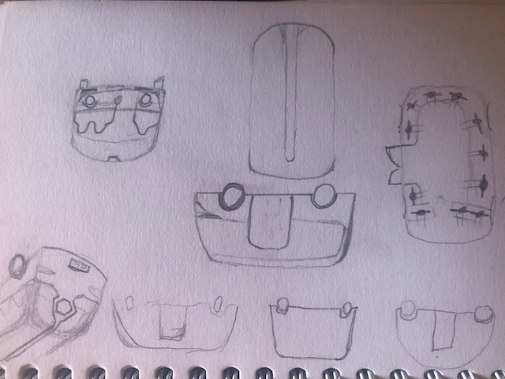
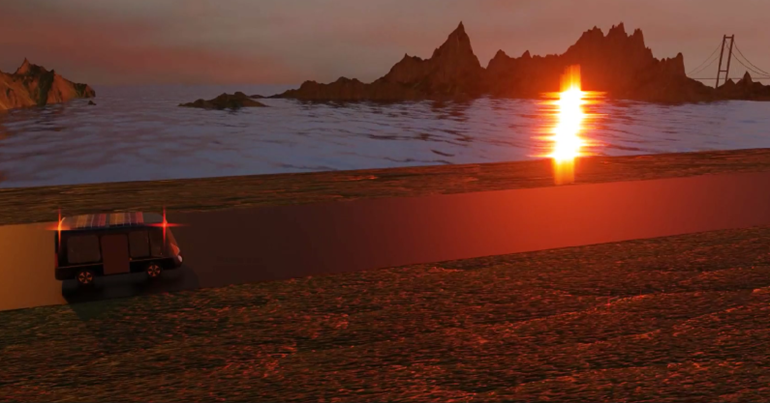

3D | Véhicule de transport en commun 2023
Description
Dans le cadre de la formation en BUT MMI, nous avions à créer, en groupe, un service de transport en commun écologique dont nous devions faire la communication à 360°. C’est moi qui ai créé le véhicule en 3D.
Pour créer le véhicule en 3D, je me suis basé sur les croquis que j’avais faits. J’ai d’abord reproduit la silhouette vue du haut, vue d’en face et vue de côté. J’ai ensuite extrudé l’intérieur de la forme pour avoir la « carcasse » du véhicule. J’ai ensuite ajouté des rectangles fins auxquels j’ai mis de la transparence pour faire les fenêtres et la porte. Sur la porte j’ai mis un motif ailes d’abeilles transparent que j’ai fait moi-même.


J’ai ensuite créé un siège que j’ai dupliqué et disposé à ma convenance. Je n’ai pas mis de poste de commande car notre véhicule le Bee-One est autonome. Pour les roues j’ai simplement pris des roues déjà existantes et j’ai changé les couleurs. La couleur de la carrosserie est un motif noir avec une ligne jaune que j’ai fait sur Illustrator.
J’ai ensuite intégré le véhicule au décor composé principalement d'éléments 3D trouvés sur internet. Puis j’ai placé la lumière, la caméra et les différents éléments qui bougeaient à leur place au moment du film puis j’ai fait le rendu.

Outils utilisés pour ce projet
3ds Max
Illustrator